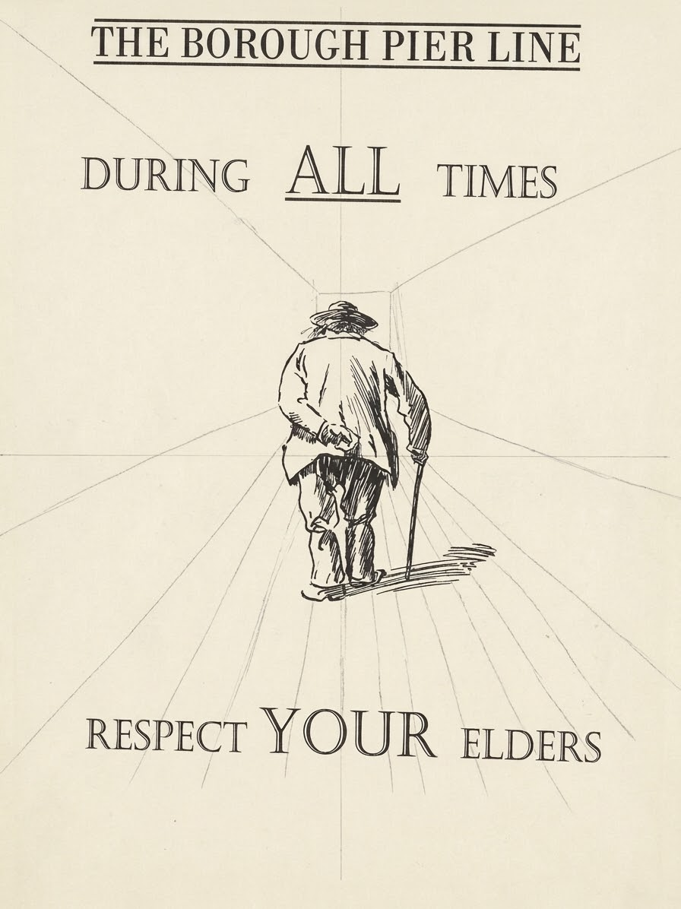

Introduction to IT
Computer architecture, operating systems, Linux command line, networking layers, and web publishing.
I am a first-year Information Technology student at Inha University in Tashkent. I love exploring how the Internet works under the hood, building clean web interfaces, and blending classic visual storytelling with modern code.

Core subjects I am studying during my freshman year at Inha University in Tashkent.
Computer architecture, operating systems, Linux command line, networking layers, and web publishing.
Writing structured, modular software, problem-solving algorithms, and debugging fundamentals.
Mathematical foundations powering computer graphics, data analysis, and machine learning.
Recent hands-on labs and creative experiments.
Captured live Wi-Fi frames in Wireshark, inspected TCP/UDP encapsulation, traced DNS hierarchy with dig, and verified TLS certificates.
Built a responsive static portfolio with pure HTML, CSS, and JavaScript, featuring persistent dark/light mode and hosted via GitHub Pages.
During my network investigation lab, I traced how packets leave my machine, cross local gateways, and travel through Autonomous Systems across the Internet:
Feel free to reach out for study groups, coding projects, or tech discussions.